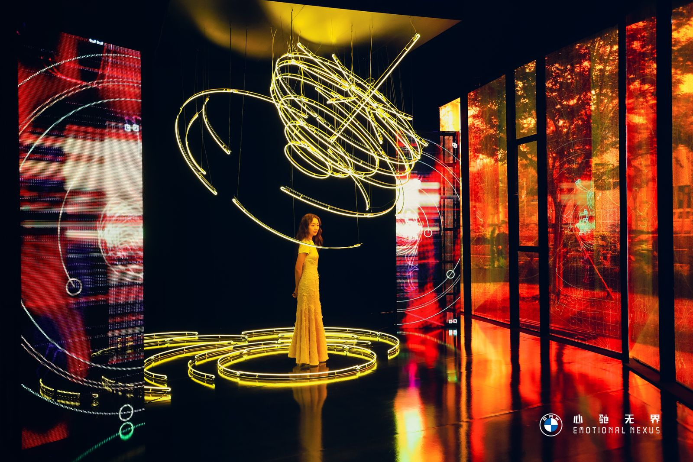

Collaboration with artist Xin Liu: NOAA
November 2023
Creative Coding and Video Editing, Curation and Design of Window Decals
Click here to XinLiu's webpage
A commission by BMW at Westbund Shanghai 2023.
Exhibited at the BMW Lounge in Hall A of the West Bund Art Center in Shanghai, as part of Shanghai
Biennale,
at 9-Nov-2023.
Artist Xin Liu has been tracking several decommissioned satellites, “NOAA”, drifting in space since
2020.
She reinterprets the received data into audile signals and images to communicate with them. Like the
thought
experiments in Valentino Braitenberg’s Vehicles: Experiments in Synthetic Psychology, these vehicles
slowly
came to embody love, logic, manifestations of foresight, creative thinking, personality, and free
will
in
the eyes of the artist. In this BWM commission, the artist imagined a cosmic dance of countless
orbiting
vehicles in her dazzling installation.
I mainly handled the coding content displayed on the screen, video editing, and with grapic designer
Yidong,
making the design of the glass decals. From simple sketches and coding frameworks to the final
completion,
it's been a truly fulfilling experience.


The trajectory of the vehicles written in code


Window sticker design with code drawing trajectories

Working with Liu Xin has been an enlightening journey. I've learned a lot. Experiencing a regular work
rhythm in the London studio, along with a healthy approach to eating and drinking well, has significantly
improved my mental well-being.
Looking forward to the next journey :)